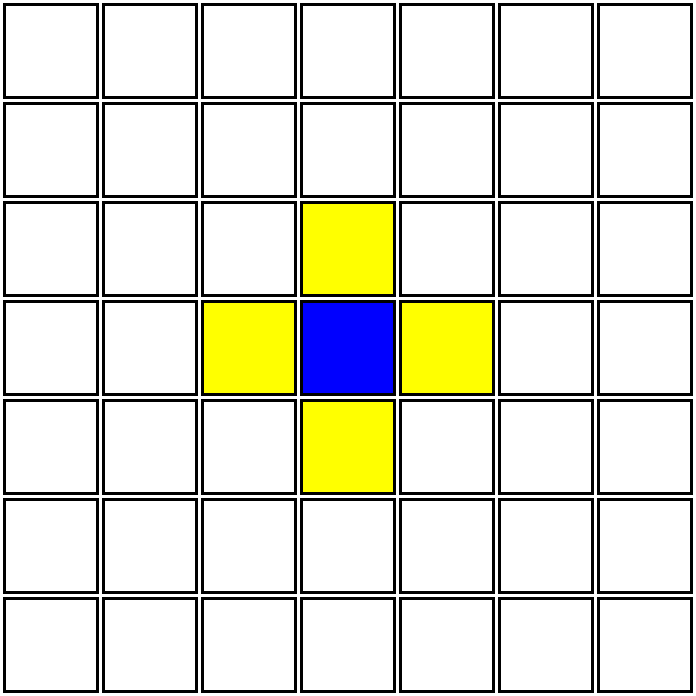

The making of this game is originally inspired from the rules of Yu-Gi-Oh! The Duelists of the Roses, yet it also attributes to some elements from Chess and Dungeons and Dragons.
The game has two types of gamemodes: War Zone (WZ) and Battlefield (BF); WZ is the expanded version that accounts to many different variables to win the game while BF is a smaller, fast-pace, and simplistic gamemode.
- Infantry Movement :
- An infantry is the most general movement in the game. Once it's your turn, each card can move one unit that is horizontal or vertical as long as the space is vacant.
- Vanguard Movement :
- The Vanguard is a power-up the player has earned through card or on the field i.e. obtaining a horse. The benefit of it is that it can move twice as far when compared to an Infantry. This is useful for mobilizing your forces much faster than the enemy can or have your warrior spearhead your army into battle.
- Cavalry Movement :
- The Cavalry movement is a type of unit that moves to set up a position rather leading straight ahead. When compared to an Infantry, the Cavalry moves diagonally while the Infantry (needs to move vertically or horizontally to reach its diagonal destination, not simply from Point A to Point B).
- How to Capture :
- The advantage to capturing an enemy is to
| Warrior-Types: | |
|---|---|
| Goblins | Orcs |
| Dwarves | Machines |
| Elves | Fairies |
| Dark Elves | Pixies |
| Humans | Guardians |
| Druids | Nature |
Elemental Attributes : Normal, Water, Earth, Grass, Fire, Lightning, Air, Light, and Dark.
Terrain : Valley, Sea, Labyrinth, Forest, Wasteland, Mountains, Aether, Underworld, Fortress
Terrain Encounters : Rain, Storm, Blizzard, Forest Fire, Tornado, Earthquake, Ambush, Monster Attack